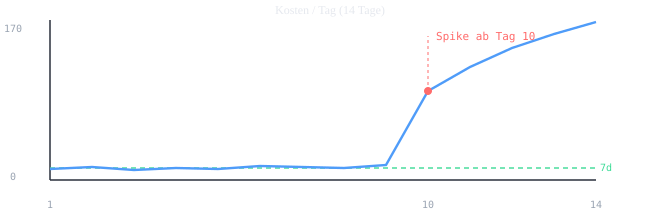
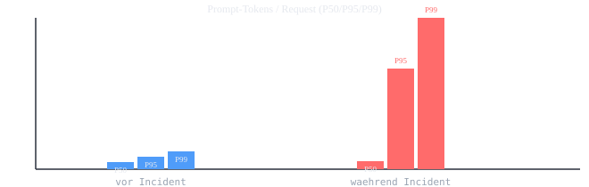

A team uses an internal AI agent. Costs spike suddenly and noticeably. At the same time, responses reference wrong / unauthorized data sources. Both symptoms appearing together = typically one shared root cause (e.g., misconfigured data-source connector, wrong API key, leaking prompt context, rolled-out RBAC change).
| # | Step | Goal | Stop Indicator |
|---|---|---|---|
| 1 | Symptom | Quantify the observation | Cost/quality spikes correlated? |
| 2 | User/Team | Who is affected, who drives it? | Single user/agent service? |
| 3 | Model/API-Key | Which model, which key? | Key shared / leaked? |
| 4 | Token Cost | Where do tokens originate? | Prompt size / retrieval blowup? |
| 5 | IAM/RBAC | Are the accesses authorized? | Over-privileged principal? |
| 6 | Private Endpoint/Network | Who may talk to whom? | Data source outside allow-list? |
| 7 | Logs/Traces | What actually happened? | Trace shows cross-talk? |
| 8 | Budget Alert | Is early warning working? | Alert fired / ignored? |
| 9 | Escalation | Who needs to be involved? | Security suspicion → route to IR |
The competencies behind this runbook — so reviewers and teams don't have to connect the dots themselves.
Azure, AWS, GCP: cost, IAM, network, logs
RBAC scopes, effective permissions, audit
Terraform & Bicep: budgets, alerts, action groups
KQL, CloudWatch Insights, distributed tracing
Tokens/req P95, cost-caps, anomaly alerts
9-step triage, post-mortems, escalation
GitHub Actions, Lighthouse, drift checks
ARIA tabs, keyboard nav, SVG titles, contrast
Where in the agent path cost-cap, RBAC, and private endpoint sit — and where the „wrong data" seeps in.
Fictional but typical patterns, generated from data/triage-data.json via node scripts/build-plots.mjs. CI checks for drift.


cost/day, tokens/req, error_rate, mismatch tickets.agent_version produces the cost?tenant/team/user_id and agent_version.agent_version dominates → narrow down there.gpt-4o vs. 4o-mini, claude-opus vs. sonnet).requests, tokens_in/out, cost for last 24h from billing/usage API.prompt_tokens per request (P50/P95/P99). P95 » P50 = outliers.Contributor/Owner at broad scope → over-privilege is likely cause.tokens/req P95 and cost/hour (not just cost/day).The KPIs embedded in each step of the flow — with definition and formula.
| Metric | Definition | Formula | Why it matters |
|---|---|---|---|
cost/day | Total daily model API cost | Σ price_in·tin + price_out·tout | Baseline & spike detection (1, 8) |
cost/req | Average cost per agent task | cost / requests | More calls vs. costlier calls (2, 3) |
tokens/req P95 | 95th percentile of prompt tokens per request | percentile(prompt_tokens, 0.95) | Retrieval/loop blowup (4) |
prompt/completion ratio | Input to output token ratio | t_in / t_out | Context blowup vs. verbose completion (4) |
mismatch-rate | Share of answers referencing wrong source | mismatched / total | Quantifies „wrong data" (1, 7) |
effective-permission-scope | Number of data sources the principal can reach | |allow_list ∩ actual_scope| | Over-privilege indicator (5) |
egress-anomaly-count | Target IPs/domains outside allow-list per hour | count(egress ∉ allowlist) | Network perimeter violation (6) |
trace-completeness | Share of hops with a span in the trace | spans / expected_hops | Observability gaps (7) |
alert-latency | Time between event and fired alert | alert_time − event_time | Early-warning quality (8) |
MTTR | Mean Time to Remediate | resolve_time − detect_time | Post-mortem KPI (9) |
Copy-paste commands per cloud. Raw files in snippets/ in the repo.
# Cost & usage per API key / model (Azure Cost Management) az consumption usage list --top 50 \ --query "[?contains(instanceName,'ai-agent')].{name:instanceName, cost:pretaxCost, date:usageStart}" # Effective permissions of the agent principal on data sources az role assignment list --assignee <agent-object-id> --all \ --query "[].{role:roleDefinitionName, scope:scope}" -o table # Last RBAC changes (Activity Log) az monitor activity-log list --caller <agent-object-id> \ --status Succeeded --resource-type "Microsoft.Authorization/roleAssignments" # Private Endpoint connections of a Storage account az storage account show --name <storage> --query "privateEndpointConnections"
# Cost Explorer: daily cost per service/tag (AWS) aws ce get-cost-and-usage \ --time-period Start=2026-06-01,End=2026-07-02 \ --granularity DAILY --metrics "UnblendedCost" \ --group-by Type=TAG,Key=agent_version Type=SERVICE # CloudWatch Logs Insights: token distribution per request aws logs start-query --log-group-name /ai/agent \ --start-time $(date -d '7 days ago' +%s) --end-time $(date +%s) \ --query-string 'filter event="llm_call" | stats pct(prompt_tokens,95) as p95, pct(prompt_tokens,99) as p99 by bin(1h)' # IAM: list policies of the agent service role aws iam list-attached-role-policies --role-name AgentServiceRole aws iam get-role --role-name AgentServiceRole --query "Role.MaxSessionDuration"
# GCP Billing: daily cost per label (agent_version) gcloud billing accounts list gcloud alpha billing accounts describe <ACCOUNT> --format="value(displayName)" # BigQuery: token cost export aggregated per request bq query --use_legacy_sql=false ' SELECT agent_version, APPROX_QUANTILES(prompt_tokens, 100)[OFFSET(95)] AS p95, SUM(cost) AS cost FROM `proj.ai.token_usage` WHERE _PARTITIONDATE >= TIMESTAMP_SUB(CURRENT_TIMESTAMP(), INTERVAL 7 DAY) GROUP BY agent_version ORDER BY cost DESC' # IAM effective permissions (Policy Analyzer) gcloud asset analyze-iam-policy --full-resource-name=<RESOURCE> \ --permissions="storage.objects.get" --format=json
// AppInsights/Log Analytics: token distribution + top consumers let span = 24h; AIAgentLLMCall | where timestamp > ago(span) | summarize req=count(), p50=percentile(prompt_tokens,50), p95=percentile(prompt_tokens,95), p99=percentile(prompt_tokens,99), cost=sum(todouble(cost)) by agent_version, dataSource | where p95 > p50 * 3 // only requests with blowup | order by cost desc // Trace hops per trace ID (find observability gaps) AppTraces | where operation_Id == "<trace-id>" | project timestamp, name, severityLevel, message | order by timestamp asc
Budget + anomaly alert + action group as IaC. Files: infra/budget.tf (Terraform) & infra/budget.bicep.
# infra/budget.tf — Budget + Anomaly Alert + Action Group (Azure) resource "azurerm_resource_group" "ai" { name = "rg-ai-agent" location = var.location } resource "azurerm_monitor_action_group" "oncall" { name = "ag-ai-oncall" resource_group_name = azurerm_resource_group.ai.name short_name = "aiOnCall" email_receiver { name = "platform" email_address = "platform-oncall@example.com" } } resource "azurerm_consumption_budget_resource_group" "agent" { name = "budget-ai-agent" resource_group_id = azurerm_resource_group.ai.id amount = 500 # EUR / month time_grain = "Monthly" time_period { start_date = "2026-07-01T00:00:00Z" end_date = "2027-07-01T00:00:00Z" } filter { tag { name = "agent_version", values = ["prod"] } } notification { enabled = true threshold = 80 # % of budget operator = "GreaterThan" contact_groups = [azurerm_monitor_action_group.oncall.id] } notification { enabled = true threshold = 100 operator = "GreaterThan" contact_groups = [azurerm_monitor_action_group.oncall.id] } } # Anomaly detection (scheduled query alert on cost/hour) resource "azurerm_monitor_scheduled_query_rules_alert" "cost_spike" { name = "alert-ai-cost-spike" resource_group_name = azurerm_resource_group.ai.name location = azurerm_resource_group.ai.location frequency = 5 time_window = 15 data_source_id = var.law_id query = <<QUERY AIAgentLLMCall | summarize cost = sum(todouble(cost)) by bin(1h) | where cost > 20 # EUR/h threshold QUERY trigger { operator = "GreaterThan", threshold = 0 } action { action_groups = [azurerm_monitor_action_group.oncall.id] } }
// infra/budget.bicep — Budget + Alert (Azure) param location string = resourceGroup().location param budgetAmount int = 500 param oncallEmail string = 'platform-oncall@example.com' resource actionGroup 'Microsoft.Insights/actionGroups@2023-01-01' = { name: 'ag-ai-oncall' location: 'global' properties: { groupShortName: 'aiOnCall' enabled: true emailReceivers: [{ name: 'platform', emailAddress: oncallEmail, useCommonAlertSchema: true }] } } resource budget 'Microsoft.Consumption/budgets@2023-04-01-preview' = { name: 'budget-ai-agent' properties: { amount: budgetAmount timeGrain: 'Monthly' timePeriod: { startDate: '2026-07-01T00:00:00Z', endDate: '2027-07-01T00:00:00Z' } filter: { tags: { name: 'agent_version', values: ['prod'] } } notifications: { warn80: { enabled: true, operator: 'GreaterThan', threshold: 80, contactEmails: [oncallEmail] } over100: { enabled: true, operator: 'GreaterThan', threshold: 100, contactEmails: [oncallEmail] } } } } // Cost-Cap as app-layer circuit breaker (pseudocode) // if hourlyCost > threshold: disableRagConnector('B'); throttleModel('mini')
Reactive is too late — these guardrails would have prevented or contained both post-mortems.
prompt_tokens; overrun rejects + alerts instead of silent blowup.infra/).cost/day; routed to PagerDuty, not just an email list.trace-completeness > 0.9 as SLO; gaps become tickets themselves.Two walkthroughs with different root causes — the same triage flow uncovers both.
| Incident | INC-2026-042 · AI agent „HelpDesk v3" · P2 · Duration 3h 20min |
|---|---|
| Symptom | Cost +680% in 14h; 7 users report answers referencing HR data instead of the HelpDesk knowledge base. |
| Impact | ~$1,450 extra spend; 3 users briefly shown wrong content; no PII leaked (verified via trace). |
| Root Cause | New RAG connector in v3.2.0 pointed to wrong workspace (HR instead of HelpDesk) via public endpoint. Service principal had Storage Blob Data Contributor at subscription scope. Large HR context blew prompt-tokens P95 from 3.5k to 28k. |
| Detection Gap | Budget alert fired 6h late (threshold on cost/day only); routed to a stale email list. |
| Fix (1st hour) | Cost-cap on; HR connector disabled; rolled back v3.2.0 to v3.1.7; principal scoped down to Blob-reader + resource scope. |
| Lasting Fix | RAG allow-list as CI gate; Private Endpoint mandatory for HR storage; alerting on cost/hour & tokens/req P95; PagerDuty. |
| Lessons | (1) RBAC scope is a cost driver. (2) Daily thresholds are too slow. (3) Data sources need review gates like code. |
FinOps asks about cost spike; simultaneous ticket wave for „wrong data". Same timestamp → one incident.
Calls by agent_version: 98% of cost from v3.2.0. Key clean, no leak.
Prompt-tokens P95 = 28k (was 3.5k). Top-10 requests all contain HR context.
Effective permissions show Contributor at subscription; HR storage reachable via public IP. = shared cause for cost and wrong data.
Cost-cap on, connector off, rollback, principal scoped down. Costs drop immediately.
Trace ID shows retrieval from HR workspace in prompt. No cross-tenant, no leak → no security IR.
Stakeholder update; lasting fixes logged as action items with owner & ETA.
| Incident | INC-2026-051 · AI agent „HelpDesk v3" · P2 · Duration 5h 40min |
|---|---|
| Symptom | Cost +210% over 3 days; answers cite outdated/wrong documents from the correct (allowed) sources. |
| Impact | ~$2,300 extra spend; 12 users with suboptimal answers; no data-access violation (sources allowed, content just wrong). |
| Root Cause | RAG embedding model swapped without recall eval. Recall dropped; a „top-k inflation" heuristic fetched 8× more chunks to compensate → prompt-tokens P95 from 3.5k to 26k, and wrong chunks surfaced. |
| Detection Gap | No recall/mismatch regression test in CI; alert only on cost/day, not tokens/req P95. |
| Fix (1st hour) | Rolled back embedding model; capped top-k at 5; cost-cap on; answer error rate dropped immediately. |
| Lasting Fix | Eval suite (recall + mismatch-rate) as CI gate for model changes; hard prompt_tokens cap in code; alert on P95. |
| Lessons | (1) Model changes need eval gates. (2) Compensating heuristics can amplify cost. (3) „Wrong data" needn't mean „wrong source" — recall is a cost driver. |
Cost rise over days + quality tickets (outdated answers). Gentler slope than #042, but correlated.
All agent_versions affected → cause in the shared RAG path, not a single deployment.
Prompt-tokens P95 = 26k. Top-10 requests show 8× more chunks than baseline.
Effective permissions fine, private endpoint ok → cause is not infra/permissions. Focus on retrieval logic.
Trace shows top-k=40 instead of 5; embedding change 3 days earlier in git log. = shared cause for cost and wrong answers.
Embedding rollback; top-k capped. Cost + mismatch-rate drop.
Eval gate as action item; no security IR (no unauthorized access).
How the 9 steps map onto established incident-response frameworks (Google SRE & NIST).
| Step | Google SRE phase | NIST IR (800-61) |
|---|---|---|
| 1 Symptom & 8 Budget Alert | Detect / Monitoring | Detect & Analyze |
| 2 User/Team & 3 Model/Key | Triage / Impact assessment | Detect & Analyze |
| 4 Token & 5 IAM & 6 Network & 7 Logs | Diagnosis / Root-cause | Analyze (containment prep) |
| Quick-fixes (cost-cap, toggle, rotate) | Mitigate / Stop the bleeding | Contain & Eradicate |
| 9 Escalation & lasting fixes | Resolve / Escalate | Recover & Eradicate |
| Post-mortem & Prevention | Postmortem & Follow-up | Post-Incident Activity (Lessons) |
Printable — usable directly during an incident. See also snippets/ & infra/.
| Step / Action | Owner | Status | |
|---|---|---|---|
| ☐ | Symptom quantified (cost delta + mismatch rate + timestamp) | L1 | open |
| ☐ | Calls grouped by agent_version / user; deployment diff pulled | L1 | open |
| ☐ | Model & API key verified; key usage checked for anomalies | L1/Sec | open |
| ☐ | Token distribution P50/P95/P99; top-10 consumers inspected | L1 | open |
| ☐ | Effective permissions per data source; RBAC audit log checked | Identity | open |
| ☐ | Egress/flow logs; Private Endpoint reachability verified | Network | open |
| ☐ | End-to-end trace pulled; prompt context reconstructed | L1 | open |
| ☐ | Budget/anomaly alert history & routing checked | FinOps | open |
| ☐ | Escalation path decided (security IR yes/no); stakeholders informed | L1→L3 | open |
| ☐ | Quick-fixes active: cost-cap, rate-limit, connector toggled, key rotated (if suspected) | L1 | open |
| ☐ | Post-mortem created; lasting fixes with owner & ETA | L1 | open |
Cost↑ & wrong data at the same time? ├── yes → suspect shared root cause (Step 1) │ ├── one agent_version dominates? → diff deployment (2) │ ├── key unexplained / leaked? → rotate, IR (3,9) │ ├── prompt-tokens P95↑? → retrieval/loop fix (4) │ ├── principal over-privileged? → tighten RBAC (5) │ ├── egress outside perimeter? → network fix (6) │ └── all versions, recall↓? → embedding/model rollback (7) └── no → open separate incidents
| Area | Owner | Notified when |
|---|---|---|
| Agent platform / model routing | Platform team | Cost↑, model switch |
| API keys / secrets | Platform + Security | Unexplained key usage |
| Data sources / RAG | Data owner | Wrong data access |
| IAM / RBAC | Identity team | Over-privilege |
| Network / private endpoints | Network team | Egress anomaly |
| Budget / alerting | FinOps | Alert fired |
| Security / IR | Security team | Leak suspicion, cross-tenant |